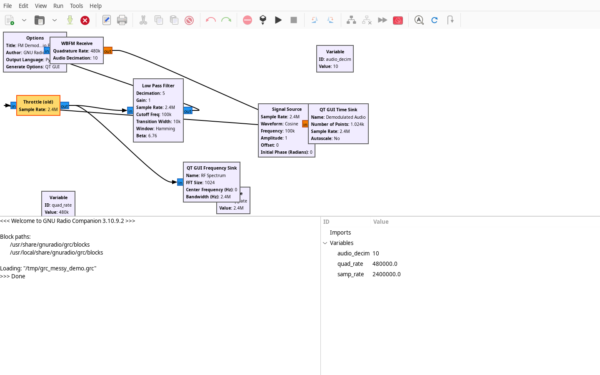
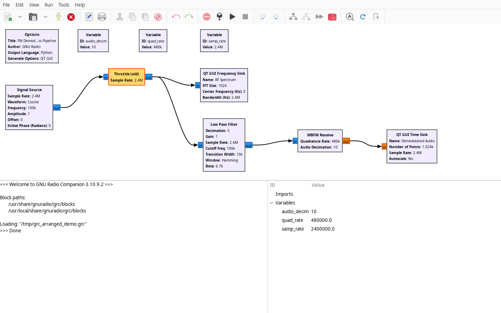
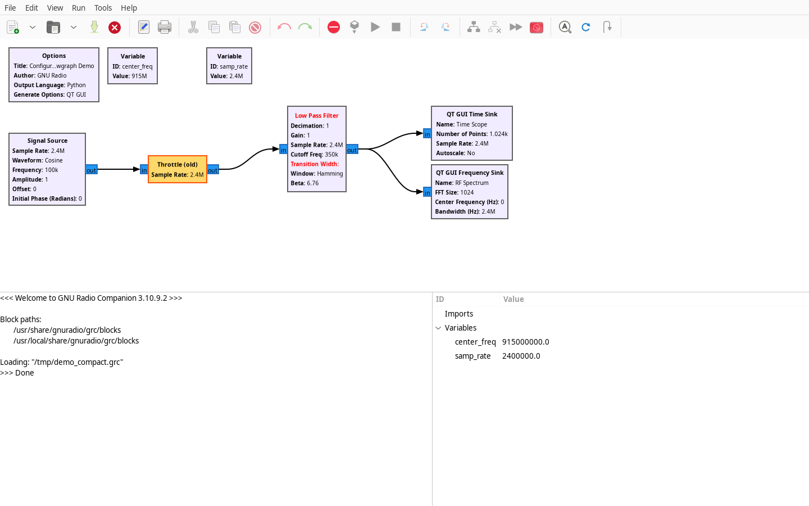
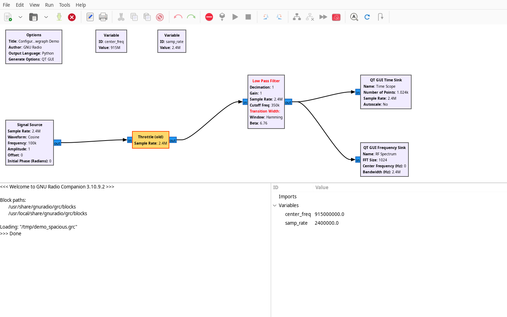
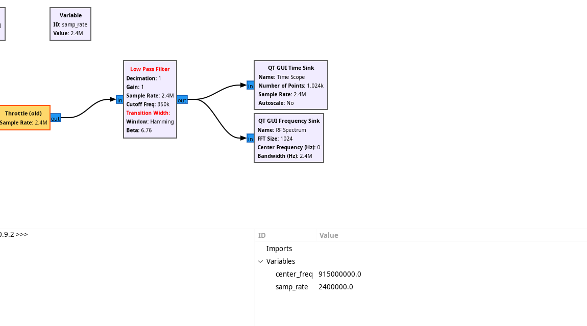
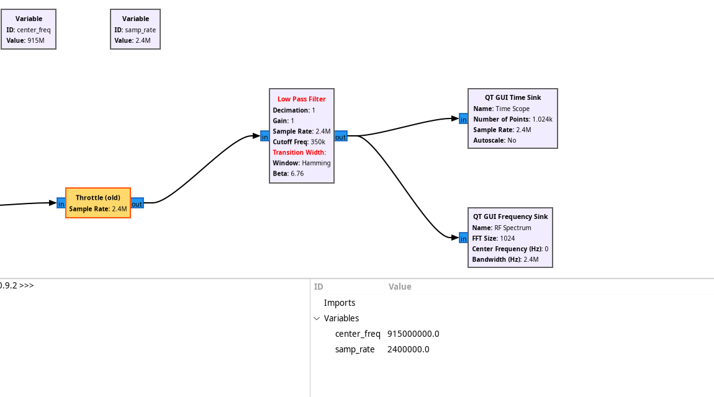

GNU Radio Companion GUI Addon
grc-autoarrange includes native GUI hooks for GNU Radio Companion (GRC). It adds menu options, a settings dialog, a toolbar button, keyboard shortcuts, and full undo/redo integration directly within GRC's GTK3 canvas.
Visual Comparison
-
Before Auto-Arrange

Messy layout with backwards routing and overlapping wires. -
After Auto-Arrange (Ctrl+Shift+A)

Layered Sugiyama DAG with top variable header and 8px grid alignment.
Launching GRC with Auto-Arrange
To launch GNU Radio Companion with the Auto-Arrange addon enabled:
Keyboard Shortcuts & Controls
| Action | Shortcut / Access | Description |
|---|---|---|
| Auto-Arrange Flowgraph | Ctrl + Shift + A | Automatically arranges all blocks (or selected blocks). |
| Auto-Arrange Settings | Edit → Auto Arrange Settings... |
Open the graphical configuration dialog. |
| Menu Access (Edit) | Edit → Auto Arrange Flowgraph |
Triggers layout calculation and redraws canvas. |
| Menu Access (Tools) | Tools → Auto Arrange Flowgraph |
Alternative menu placement. |
| Toolbar Button | :material-format-justify-fill: icon on toolbar | Single-click auto-arrange. |
| Undo | Ctrl + Z | Reverts canvas to state prior to auto-arrange. |
| Redo | Ctrl + Y / Ctrl + Shift + Z | Re-applies auto-arrange layout. |
Configurable Spacing & Settings Dialog
You can customize block spacing, layer spacing, and layout direction dynamically from within GRC via Edit → Auto Arrange Settings...:

Settings Options
- Block Spacing (Vertical / Same Layer): Control vertical spacing between blocks in the same layer (8px to 300px).
- Layer Spacing (Horizontal / Between Layers): Control spacing between consecutive processing stages (8px to 400px).
- Flow Direction: Choose
RIGHT(standard left-to-right),DOWN(top-to-bottom),LEFT, orUP. - Header Columns: Set fixed column count for top variable header or
0for auto-wrap. - Save as Default: Persists your preferences to
~/.config/gnuradio/grc_autoarrange.jsonso every future session uses them.
Spacing Comparison Examples
Adjusting block spacing allows you to optimize for tight, compact canvas views or spacious, easily readable diagrams:


Compact Spacing (--spacing 24) |
Spacious Layout (--spacing 96) |
|---|---|
 |
 |
| Tight, space-efficient block arrangement | Wide separation for complex feedback paths |
Selection-Only Layout
If your flowgraph is large and you only want to organize a localized portion (e.g. a demodulator subsystem):
- Select the blocks you want to organize by dragging a selection rectangle or holding Ctrl and clicking.
- Press Ctrl + Shift + A.
- Only the selected blocks will be arranged relative to each other; all unselected blocks remain untouched!